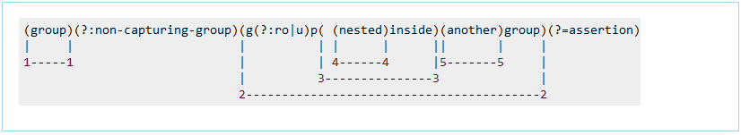
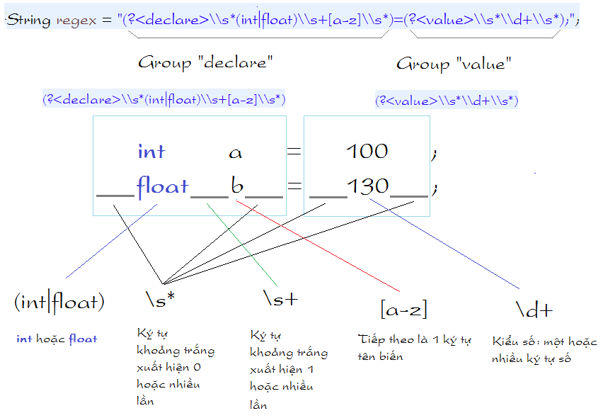
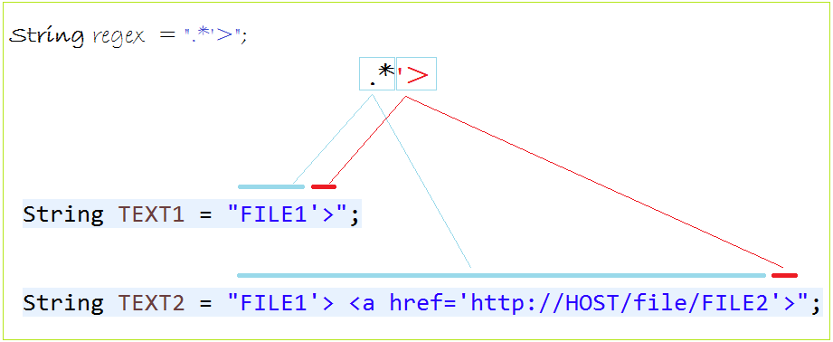

Một số ký tự đặc biệt trong biểu thức chính quy nói chung \.[{(*+?^$|
Trong Java Regex bạn muốn nó hiểu các ký tự đó theo cách thông thường bạn cần thêm dấu \ ở phía trước. Chú ý bản thân dấu \ cũng là ký tự đặc biệt trong Java String nên chúng ta phải thêm 2 dấu. Chẳng hạn ký tự chấm . Java regex đang hiểu là một ký tự bất kỳ, nếu bạn muốn nó hiểu là một ký tự chấm thông thường, cần phải có dấu \ phía trước.
// Mẫu regex mô tả một ký tự bất kỳ. String regex = "."; // Mẫu regex mô tả ký tự dấu chấm. String regex = "\\.";
| Phương thức | Mô tả |
| String.matches(String regex) | Kiểm tra toàn bộ xâu có khớp với regex không. Chú ý sẽ kiểm tra toàn bộ xâu. Ở JavaScript, các hàm regex.test, str.search, str.match chỉ cần pattern là một phần trong xâu là được. Các cách tương tự nhưng mà dài dòng hơn:
|
| String.replaceAll(String regex) | |
| String.replaceFirst(String regex) | |
| String.split(String regex) | |
| Pattern.matcher(String str) |
Pattern chính là đối tượng biểu thức chính quy regex. Để
khởi tạo, chúng ta sử dụng phương thức static Pattern.compile.
Pattern là một đối tượng mẫu, một phiên bản biên dịch của biểu thức chính quy. Nó không có cấu tử public, và chúng ta sẽ sử dụng method tĩnh compile(String) để tạo đối tượng, với tham số là biểu thức chính quy.
PatternSyntaxException sẽ bị ném ra nếu biểu thức chính quy có ngữ pháp không chính xác.
Matcher để trích xuất các capture group. Để có đối tượng
Matcher, chúng ta sử dụng phương thức matcher của đối tượng
Pattern.
Matcher là một phương tiện để khớp với String dữ liệu vào với đối tượng Pattern đã tạo trước đó. Class này không có cấu tử public, và chúng ta lấy đối tượng này thông qua method matcher(String) của đối tượng pattern. Với tham số String là văn bản cần kiểm tra.
Để trích xuất từng group, chúng ta sử dụng phương thức group()
của đối tượng Matcher. Phương thức group(0) trả về xâu tìm
kiếm được.
Để tìm kiếm liên tiếp nhiều lần, chúng ta sử dụng phương thức find()
của đối tượng Matcher.
Để kiểm tra, sử dụng phương thức matches() của đối tượng
Matcher.
Class Pattern:
Class Matcher:
Code mẫu:
String regex= ".xx.";
// Tạo đối tượng Pattern thông qua method tĩnh.
Pattern pattern = Pattern.compile(regex);
// Lấy ra đối tượng Matcher
Matcher matcher = pattern.matcher("MxxY");
boolean match = matcher.matches();
System.out.println("Match "+ match);
Phương thức replace là xâu, replaceAll là biểu thức chính quy.
replaceFirst
Một biểu thức chính quy bạn có thể tách ra thành các nhóm (group):
// Một biểu thức chính quy String regex = "\\s+=\\d+"; // Viết dưới dạng group, bởi dấu () String regex2 = "(\\s+)(=)(\\d+)"; // Một cách khác. String regex3 = "(\\s+)(=\\d+)";
Các group có thể lồng nhau, và như vậy cần một quy tắc đánh chỉ số các group. Toàn bộ pattern được định nghĩa là group số 0. Còn lại được mô tả giống hình minh họa dưới đây:

Chú ý: Sử dụng (?:pattern) để thông báo với Java không xem đây là một group (None-capturing group)
Từ Java 7, bạn có thể xác định một group có tên (?<name>pattern), Và bạn có thể truy cập các nội dung khớp với Matcher.group (String name). Điều này làm Regex dài hơn, nhưng mã này là có ý nghĩa hơn, dễ hơn.
Nhóm bắt theo tên cũng có thể được truy cập thông qua Matcher.group(int group) với các đề án đánh số tương tự.
Nội bộ, Java chỉ lập bản đồ từ tên đến số nhóm. Do đó, bạn không thể sử dụng cùng tên để bắt 2 nhóm khác nhau.
Để dễ hiểu bạn có thể dùng named group. Hãy xem hình minh họa dưới đây:

Trong một số tình huống *? rất quan trọng, hãy xem một ví dụ sau:
// Đây là một regex // Bắt gặp ký tự bất kỳ 0 hoặc nhiều lần, // sau đó tới ký tự ' và tiếp theo là > String regex = ".*'>"; // Đoạn TEXT1 sau đây có vẻ hợp với regex nói trên. String TEXT1 = "FILE1'>"; // Đoạn TEXT2 sau cũng hợp với regex nói trên. String TEXT2 = "FILE1'> <a href='http://HOST/file/FILE2'>";

*? sẽ tìm ra một phù hợp nhỏ nhất.
Capturing Groups là một cách coi nhiều ký tự như là một đơn vị đơn. Chúng được tạo bằng việc xác định vị trí của các ký tự để được nhóm vào trong một tập hợp các dấu ngoặc đơn. Ví dụ, Regular Expression (dog) tạo một group đơn chứa các chữ cái là “d”, “o” và “g”.
Capturing Groups được đánh số bởi việc tính toán số dấu ngoặc đơn mở từ trái qua phải. Ví dụ, trong Expression ((A)(B(C))) có 4 nhóm:
((A)(B(C)))
(A)
(B(C))
(C)
Để tìm bao nhiêu group có mặt trong Expression đó, bạn gọi phương thức groupCount trên một đối tượng Matcher. Phương thức groupCount trả về một int minh họa số Capturing Groups có mặt trong mẫu của đối tượng Matcher.
Cũng có một group đặc biệt, là group 0, mà luôn luôn biểu diễn toàn bộ expression. Group này không được bao gồm trong kết quả của phương thức groupCount.
http://www.vogella.com/tutorials/JavaRegularExpressions/article.html
https://o7planning.org/vi/10175/huong-dan-su-dung-bieu-thuc-chinh-quy-trong-java